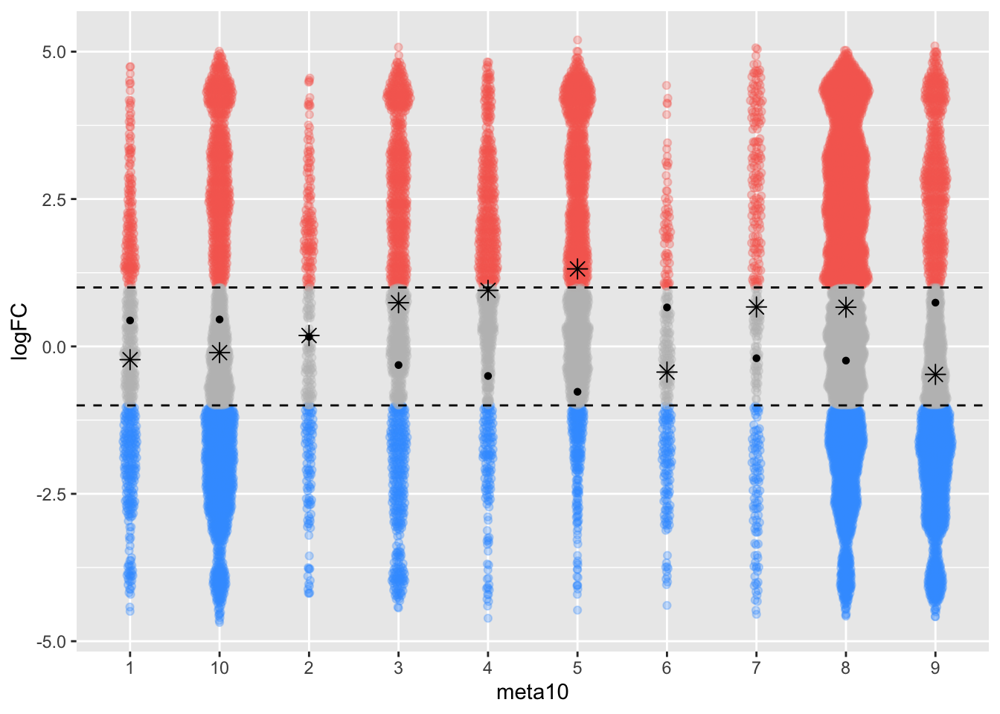
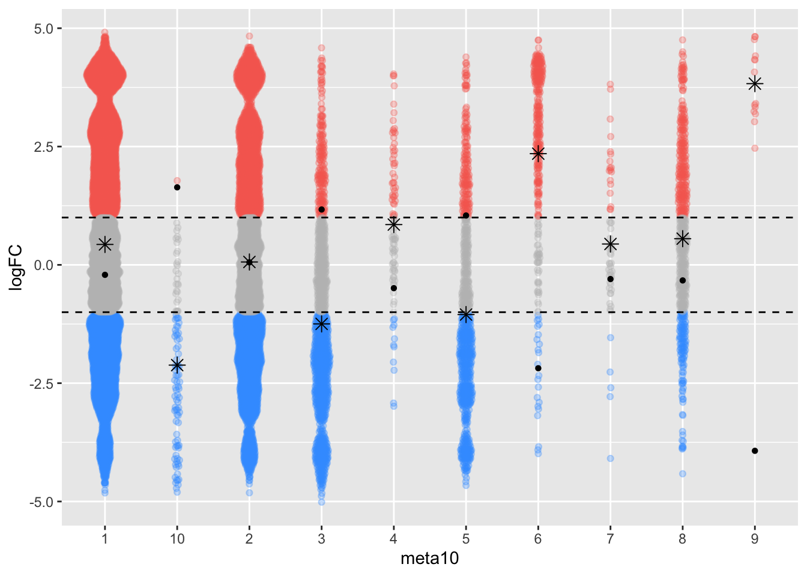
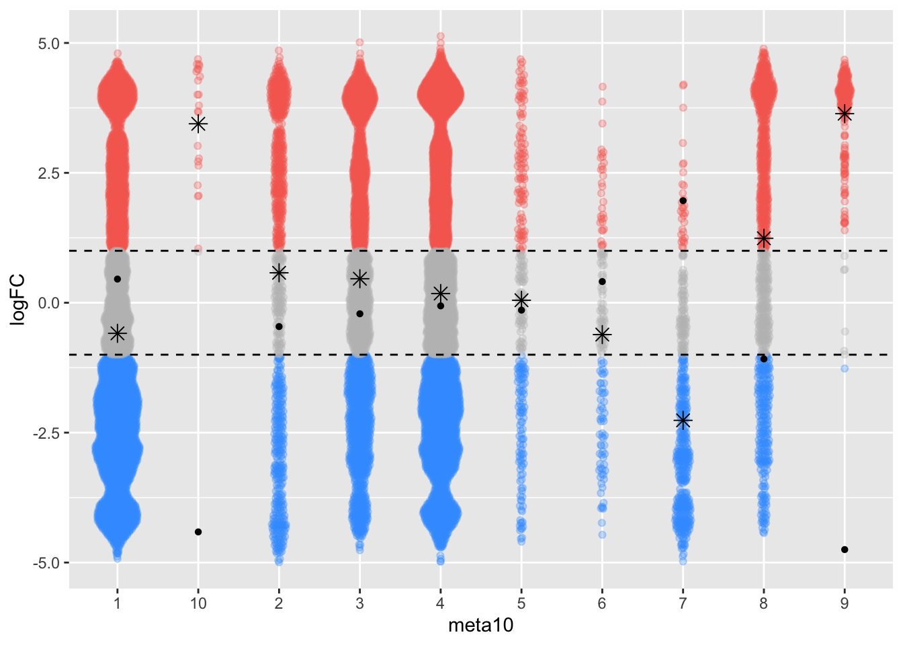
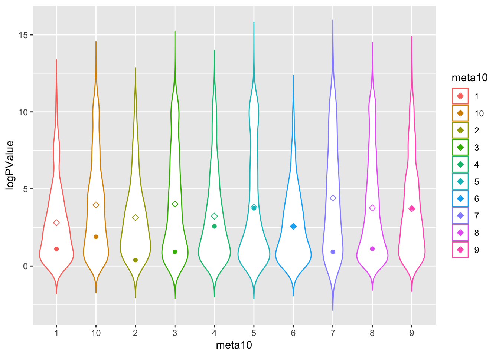
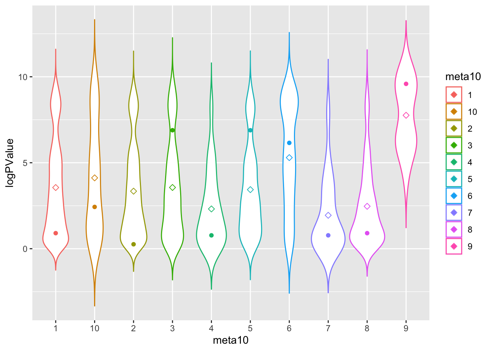
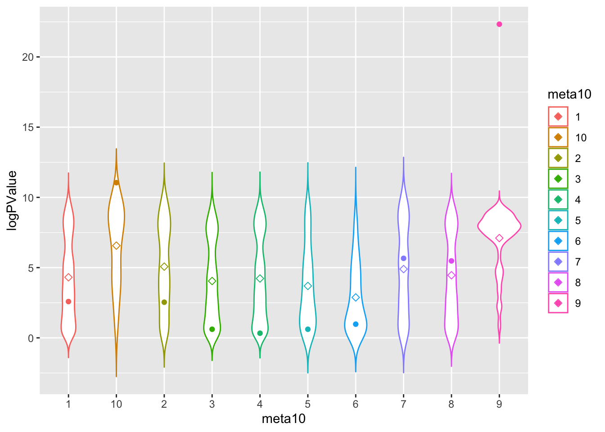
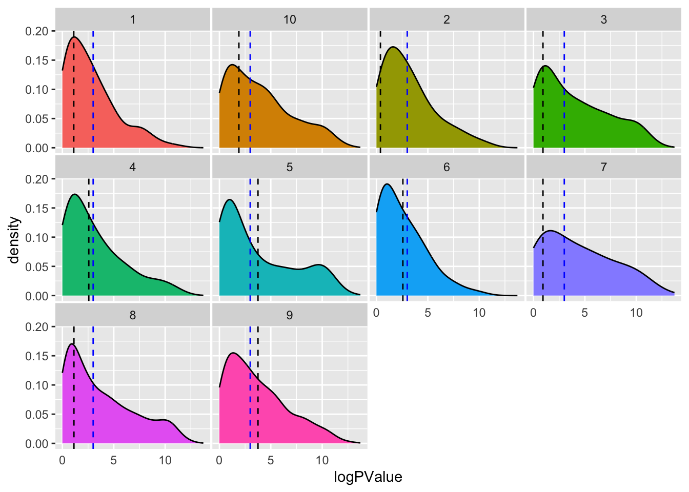
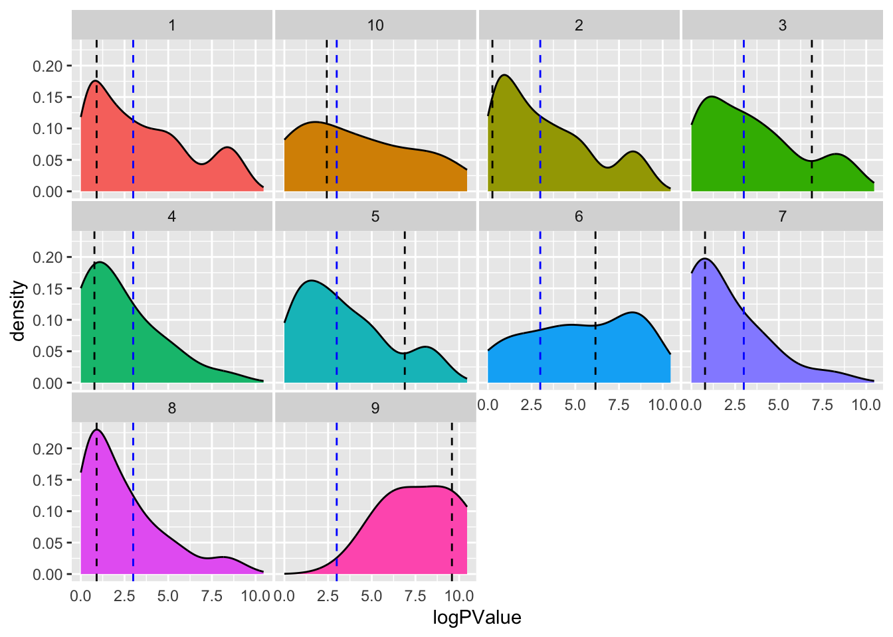
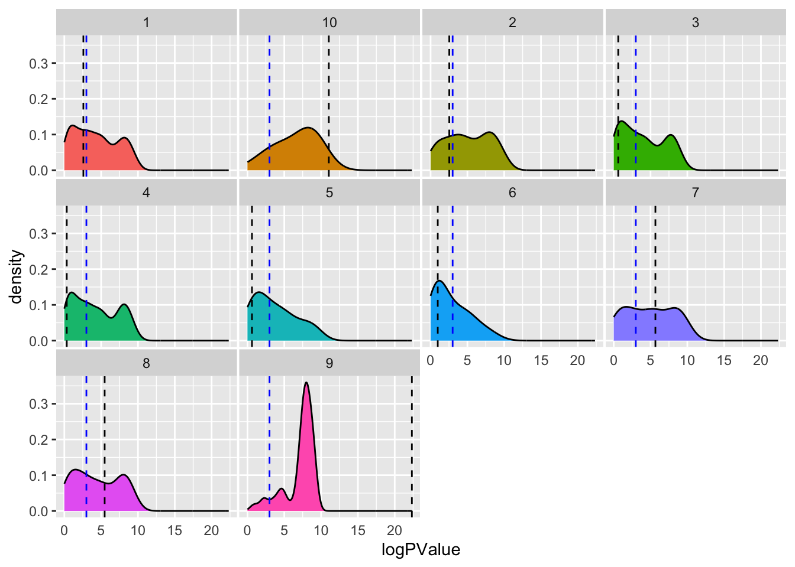

library(miloR)
library(SingleCellExperiment)
library(scater)
library(dplyr)
library(patchwork)
library(ggbeeswarm)
library(ggplot2)
library(stringr)
library(tidyr)04_milo
Loading packages
Clustering by type
Function to run PCA.
We run PCA using three different features: type, state and all, and used distances from PCA to construct K-NN graph.
myfeature <- list("type", "state", NULL)
run.PCA <- function(feature) {
sce <- cluster(sce, features = feature,
xdim = 10, ydim = 10, maxK = 20, seed = 1234)
sce <- runDR(sce, "PCA", features = feature)
}
sce.list <- lapply(myfeature, run.PCA)DA analysis
Preparing required variables
merging_table1 <- "PBMC8_cluster_merging1.xlsx"
download.file(file.path(url, merging_table1),
destfile = merging_table1, mode = "wb")
merging_table1 <- read_excel(merging_table1)
head(data.frame(merging_table1)) original_cluster new_cluster
1 1 B-cells IgM+
2 2 surface-
3 3 NK cells
4 4 CD8 T-cells
5 5 B-cells IgM-
6 6 monocytesmerging_table1$new_cluster <- factor(merging_table1$new_cluster,
levels = c("B-cells IgM+", "B-cells IgM-", "CD4 T-cells",
"CD8 T-cells", "DC", "NK cells", "monocytes", "surface-"))
ei <- metadata(sce)$experiment_info
(da_formula1 <- createFormula(ei,
cols_fixed = "condition",
cols_random = "sample_id"))$formula
y ~ condition + (1 | sample_id)
<environment: 0x7f872c0b97e8>
$data
condition sample_id
1 BCRXL BCRXL1
2 Ref Ref1
3 BCRXL BCRXL2
4 Ref Ref2
5 BCRXL BCRXL3
6 Ref Ref3
7 BCRXL BCRXL4
8 Ref Ref4
9 BCRXL BCRXL5
10 Ref Ref5
11 BCRXL BCRXL6
12 Ref Ref6
13 BCRXL BCRXL7
14 Ref Ref7
15 BCRXL BCRXL8
16 Ref Ref8
$random_terms
[1] TRUE(da_formula2 <- createFormula(ei,
cols_fixed = "condition",
cols_random = c("sample_id", "patient_id")))$formula
y ~ condition + (1 | sample_id) + (1 | patient_id)
<environment: 0x7f8724b38908>
$data
condition sample_id patient_id
1 BCRXL BCRXL1 Patient1
2 Ref Ref1 Patient1
3 BCRXL BCRXL2 Patient2
4 Ref Ref2 Patient2
5 BCRXL BCRXL3 Patient3
6 Ref Ref3 Patient3
7 BCRXL BCRXL4 Patient4
8 Ref Ref4 Patient4
9 BCRXL BCRXL5 Patient5
10 Ref Ref5 Patient5
11 BCRXL BCRXL6 Patient6
12 Ref Ref6 Patient6
13 BCRXL BCRXL7 Patient7
14 Ref Ref7 Patient7
15 BCRXL BCRXL8 Patient8
16 Ref Ref8 Patient8
$random_terms
[1] TRUEcontrast <- createContrast(c(0, 1))
group <- factor(ei(sce)$condition)
design <- model.matrix(~ group)
colnames(design) <- levels(group)Run DA analysis function using three features
sce.list <- lapply(sce.list, mergeClusters, k = "meta20",
table = merging_table1, id = "merging1", overwrite = TRUE)
run.DA <- function(sce, cluster_id){
da_res <- diffcyt(sce,
formula = da_formula1, contrast = contrast, design = design,
analysis_type = "DA", method_DA = "diffcyt-DA-edgeR",
clustering_to_use = cluster_id, verbose = FALSE)
}
diffcyt.da_res <- lapply(sce.list, run.DA, cluster_id = "meta10")Milo
Preparing traj_design
prepare.traj_design <- function(traj_milo){
traj_design <- data.frame(colData(traj_milo))[,c("sample_id", "condition")]
traj_design <- distinct(traj_design)
traj_design$sample_id <- colnames(nhoodCounts(traj_milo))
traj_design$condition <- str_sub(traj_design$sample_id, 1, str_length(traj_design$sample_id)-1)
rownames(traj_design) <- traj_design$sample_id
return(traj_design)
}Run milo
run.Milo <- function(sce){
traj_milo <- Milo(sce)
reducedDim(traj_milo, "PCA") <- reducedDim(sce, "PCA")
# Defining representative neighbourhoods
traj_milo <- buildGraph(traj_milo, d = 9)
traj_milo <- makeNhoods(traj_milo, d = 9)
# Counting cells in neighbourhoods
traj_milo <- countCells(traj_milo, meta.data = colData(traj_milo), sample="sample_id")
traj_milo <- calcNhoodDistance(traj_milo, d=9)
}
traj_milo.list <- lapply(sce.list, run.Milo)
annotate.Cluster_id <- function(traj_milo, sce){
traj_design <- prepare.traj_design(traj_milo)
da_res <- testNhoods(traj_milo, design = ~ condition, design.df = traj_design)
colData(traj_milo)$meta10 <- cluster_ids(sce, "meta10")
da_res <- annotateNhoods(traj_milo, da.res = da_res, coldata_col = "meta10")
return(da_res)
}
milo.da_res <- list()
for(i in 1:3){
milo.da_res[[i]] <- annotate.Cluster_id(traj_milo.list[[i]], sce.list[[i]])
}Comparison by logFC using mean
plot.logFC <- function(milo.da_res, diffcyt.da_res){
milo.da_res$color <- "grey"
milo.da_res[milo.da_res$logFC > 1, ]$color <- "#F76D5E"
milo.da_res[milo.da_res$logFC < -1, ]$color <- "#3FA0FF"
diffcyt.da_res$meta10 <- diffcyt.da_res$cluster_id
ggplot(milo.da_res, aes(x=meta10, y = logFC, color=milo.da_res$color)) + geom_quasirandom(alpha=.3,varwidth=TRUE) + stat_summary(fun.y=mean, geom="point", shape=8, size=3, color="black") + geom_point(data=data.frame(diffcyt.da_res), mapping = aes(x=meta10, y=logFC), pch=16, color="black") + scale_colour_identity() + geom_hline(yintercept=1,linetype=2) + geom_hline(yintercept= -1,linetype=2)
}
#+ geom_point(data=data.frame(diffcyt.da_res), mapping = aes(x=merging1, y=logFC))
p1 <- plot.logFC(milo.da_res[[1]], rowData(diffcyt.da_res[[1]]$res))
p2 <- plot.logFC(milo.da_res[[2]], rowData(diffcyt.da_res[[2]]$res))
p3 <- plot.logFC(milo.da_res[[3]], rowData(diffcyt.da_res[[3]]$res))
p1
p2
p3
Comparison by P-value
plot.PValue <- function(milo.da_res, diffcyt.da_res){
diffcyt.da_res$meta10 <- diffcyt.da_res$cluster_id
milo.da_res$logPValue <- -log(milo.da_res$PValue)
diffcyt.da_res$logPValue <- -log(diffcyt.da_res$p_adj)
p<-ggplot(milo.da_res, aes(x=meta10, y=logPValue, color=meta10)) +
geom_violin(trim=FALSE) + stat_summary(fun.y=mean, geom="point", shape=23, size=2) + geom_point(data=data.frame(diffcyt.da_res), mapping = aes(x=meta10, y=logPValue))
}
p1 <- plot.PValue(milo.da_res[[1]], rowData(diffcyt.da_res[[1]]$res))
p2 <- plot.PValue(milo.da_res[[2]], rowData(diffcyt.da_res[[2]]$res))
p3 <- plot.PValue(milo.da_res[[3]], rowData(diffcyt.da_res[[3]]$res))
p1
p2
p3
Plot p-value distribution
# Using Small multiple
plot.PValue_dist <- function(milo.da_res, diffcyt.da_res){
milo.da_res$logPValue <- -log(milo.da_res$PValue)
da_res <- data.frame(diffcyt.da_res)
da_res$logPValue <- -log(da_res$p_adj)
da_res$meta10 <- da_res$cluster_id
p <- ggplot(data=milo.da_res, aes(x=logPValue, group=meta10, fill=meta10)) +
geom_density(adjust=1.5) +
facet_wrap(~meta10) +
geom_vline(data = da_res, mapping = aes(xintercept = logPValue, group=meta10), linetype="dashed") + geom_vline(xintercept = -log(0.05), linetype="dashed", color = "blue") +
theme(
legend.position="none",
panel.spacing = unit(0.1, "lines"),
axis.ticks.x=element_blank()
)
}
p1 <- plot.PValue_dist(milo.da_res[[1]], rowData(diffcyt.da_res[[1]]$res))
p2 <- plot.PValue_dist(milo.da_res[[2]], rowData(diffcyt.da_res[[2]]$res))
p3 <- plot.PValue_dist(milo.da_res[[3]], rowData(diffcyt.da_res[[3]]$res))
p1
p2
p3